At this stage, you’re ready to go back into the “wild” and figure things out on your own. However, I don’t want to leave you only semi-equipped to fight the war. I want to provide the best so you can survive and have the tools you need to win the war. So here are nine price action trading techniques I’ve learned over the years that will take your price action trading skills to the next level.
I discovered this technique by accident. Here’s a quick story. A few years back, as I was reviewing my breakout trades, I wondered to myself, ”How can I enter a breakout before it occurs?” The next thing I knew, I was looking at the lower time frame and something caught my attention!
I realized that when the market is forming a buildup, there’s an opportunity to time your entry on the lower time frame. In other words, when the price is forming a buildup, you can go down to a lower time frame and look for price rejection at the lows of the buildup (which is a swing low or support on the lower time frame).
And if there’s a price rejection in the lows of a buildup, you can go long on the next candle in the hope that the price will break out of consolidation higher. Here’s an example:
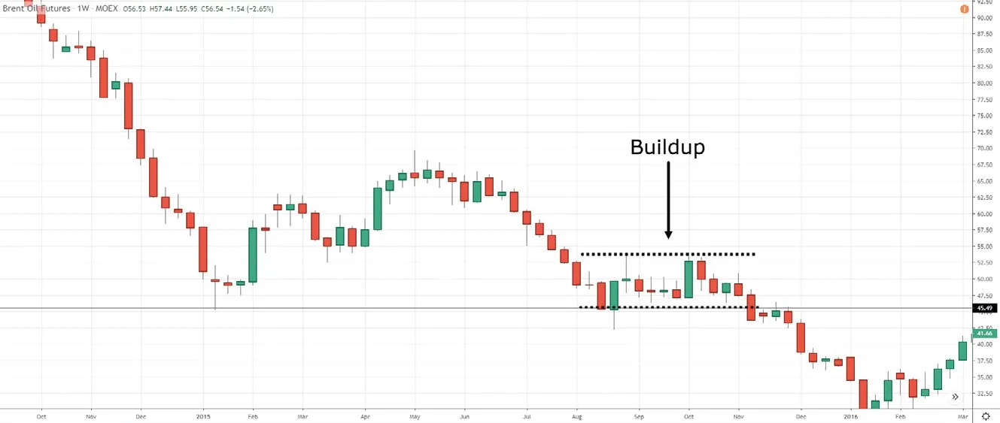 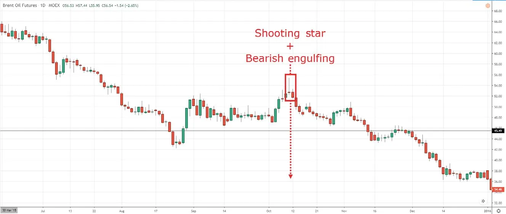If you think about it, this is actually the MAEE formula using multiple time frame analysis. And since the higher time frame is forming a buildup, you want to adopt a trailing stop loss technique that allows you to capture the potential breakout.
You know that an uptrend consists of higher highs and lows, right? But here’s the thing. Not all trends are the same even though they have higher highs and lows. Why? Because it’s the depth of the pullback that matters. So to take things a step further, you can classify trends into one of three types: strong trends, healthy trends, and weak trends.
Let’s examine each of these.
In a strong uptrend, the pullback is shallow (not more than 38% retracement), and the price finds support around the 20-period moving average. Because the pullback is shallow, it’s difficult to time your entry on the pullback because the price would quickly reverse higher if you were “slow.” Thus, it’s easier to trade breakouts in a strong trending market. Here’s an example:
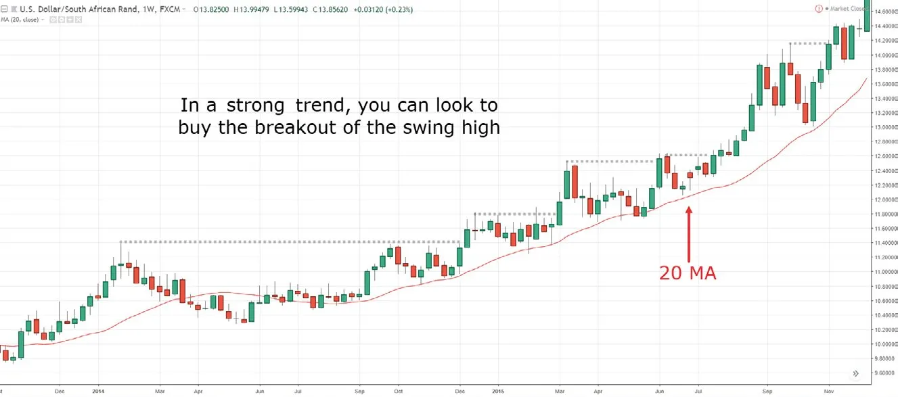Still, if you want to trade the pullback, my suggestion is to use the pre-breakout technique that you learned earlier.
Next…
In a healthy uptrend, the pullback is obvious (not more than 50% retracement), and the price finds support around the 50-period moving average. Since this pullback is deeper, you’ve got enough time to time your entry on the pullback, possibly looking for a “bounce” near the 50-period moving average. Also, in a healthy trend, the price tends to re-test previous resistance, which now becomes support (near the 50-period moving average). Here’s what I mean:
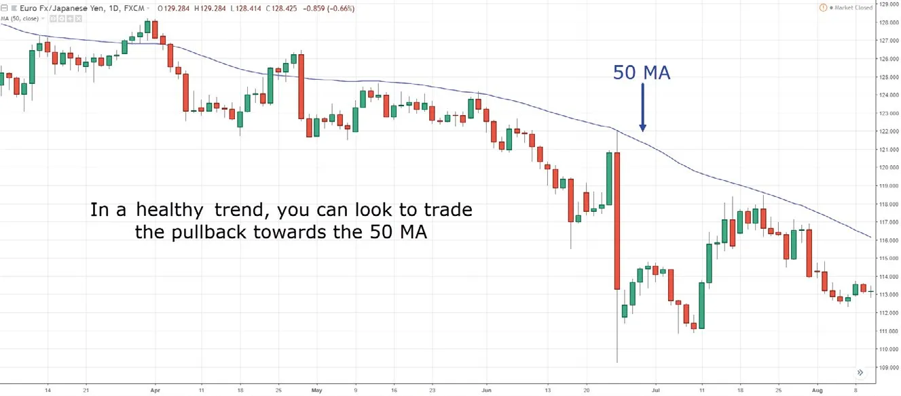Finally, a weak uptrend has deep pullbacks (at least 62% retracement) and the price finds buying pressure around the 200-period moving average. In a market condition like this, you don’t want to buy breakouts because you’ll likely get stopped out on the pullback. Instead, you can time your entries on the pullback towards the 200-period moving average or at support. Let me give you an example:
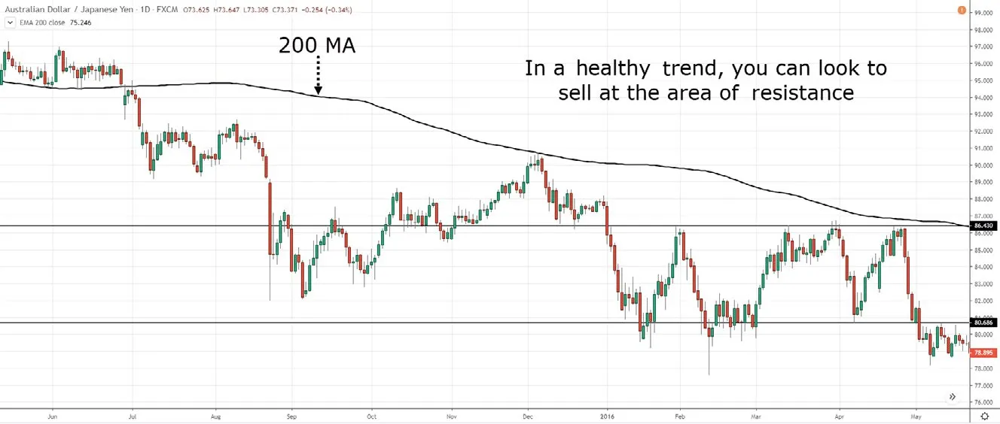DON’T TRADE IN THE DIRECTION OF THE TREND WHEN THE PRICE IS “OVERSTRETCHED”
When the market is trending, it tends to pull back towards the mean. For example, in a healthy uptrend, the price tends to pull back towards the 50-period moving average (MA). So you want to look for buying opportunities when the price is near the 50 MA, not when it’s far from it. Why?
If you buy when the price is far above the 50 MA, your stop loss must be below the 50 MA to invalidate your trading setup—and that’s a wide stop loss that offers a poor risk-to-reward ratio.
On the other hand, if your stop loss is above the 50 MA, you’ll likely get stopped out on the pullback even though the uptrend is still intact. Here’s what I mean…
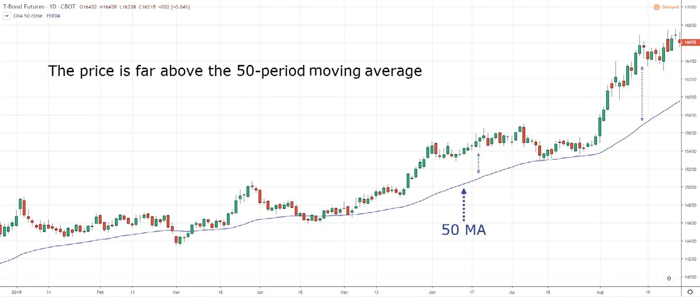In this case, a better approach would be to buy near the 50 MA since you have a tighter stop loss, which improves your risk-to-reward ratio. And even if you get stopped out, this will happen because your trading setup is invalidated and not due to some random noise in the markets.
As you know, the market doesn’t go up in a straight line. Instead, there’s an ebb and flow to it—it goes up, makes a pullback, then continues higher, and so on. And if you take things a step further, you can classify this “up-and-down” pattern as a trending move and a retracement move.
A trending move is the “stronger” leg of the trend. You’ll notice the body and range of the candles are larger—and it trades in the direction of the trend. Here’s an example:
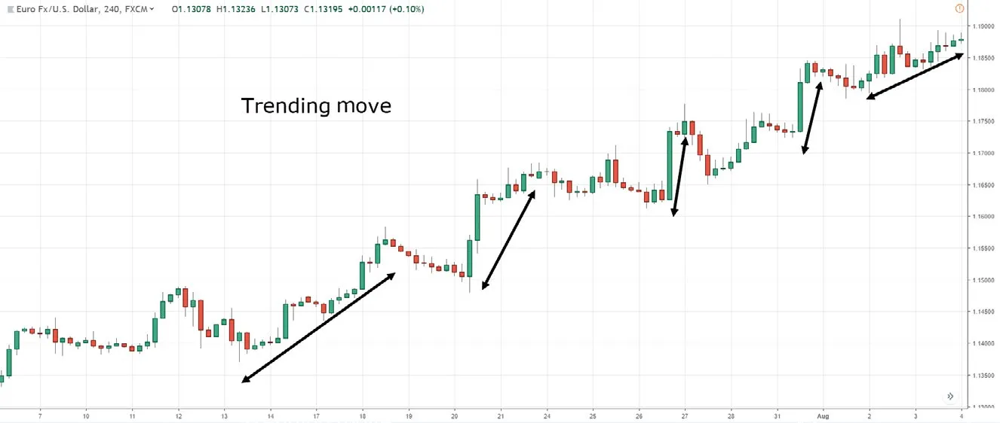On the other hand, a retracement move is the “weaker” leg of the trend. You’ll notice that both the body and the range of candles are smaller—and it trades against the direction of the trend. Here’s what I mean:
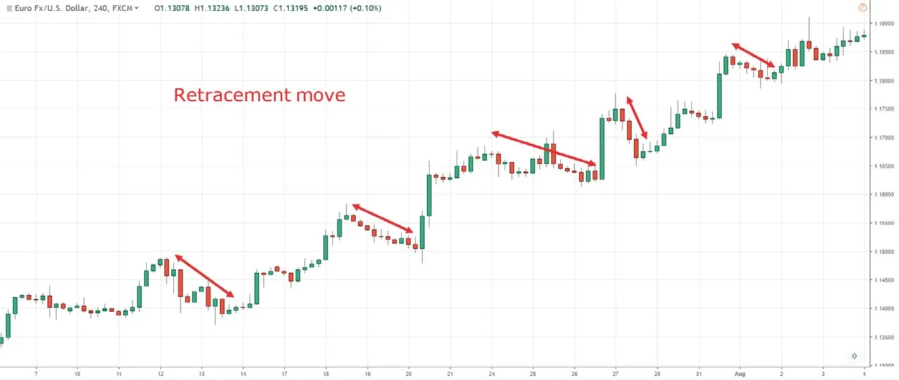So why am I sharing this? Simple. In a normal trend, you’d expect a trending move followed by a retracement move. But when the trend weakens, you’ll notice that the range of the retracement moves gets larger (in contrast to the smaller ones you usually see). And when you combine this with market structure and area of value, you can pinpoint market turning points with accuracy. Here’s an example:
NZD/CAD Daily:
In the daily time frame, the price is a resistance area and has the confluence of a downward trendline. The price could reverse lower, so let’s look for a shorting opportunity on the lower time frame…
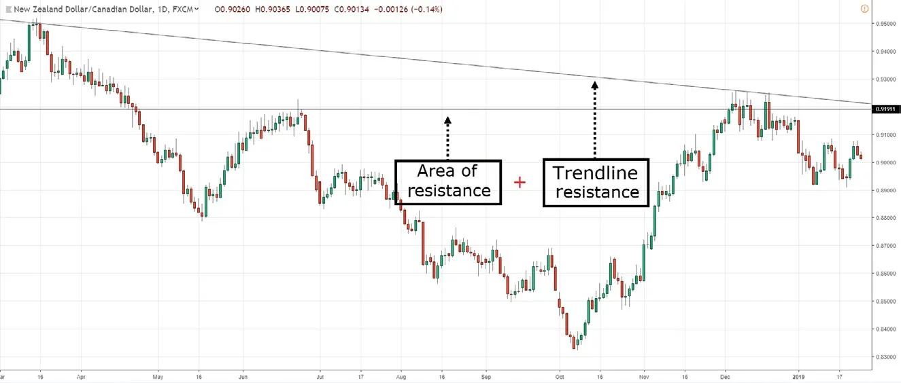NZD/CAD 8-hour:
In the 8-hour time frame, the selling pressure is coming in: You’ll notice the candles of the retracement moves getting bigger (a sign of strength from the sellers). Also, the buying pressure is becoming weak since the candles of the trending move are getting smaller. One possible entry technique is to go short when the price breaks and closes below support:
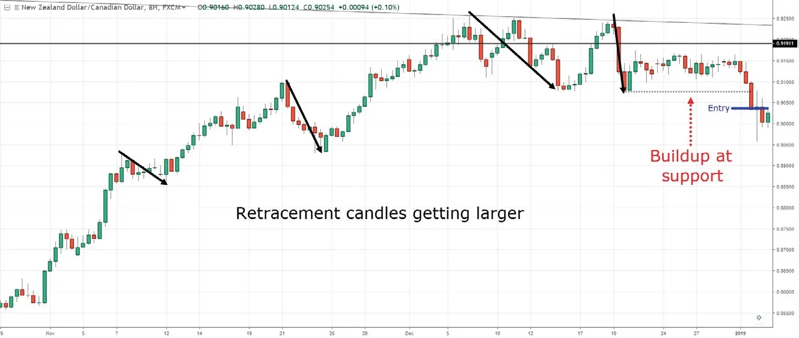Every day when the market opens, it has a finite amount of “energy” to move before it exhausts itself (kind of like a car with a tank of fuel). But the question is, how do you know when the market is exhausted and unlikely to move further? Well, that’s where the average true range (ATR) indicator comes into play.
The ATR indicator measures volatility in the markets. So if a 20-period ATR (in the daily time frame) is 100 pips, this means the market has moved an average of 100 pips/day over the last 20 days.
This doesn’t mean the market will reverse after moving 100 pips for the day because it can “stretch” further than that. But it sets the boundary for how much the market can potentially move in a given day. And when you combine this technique with support and resistance, market structure, candlestick patterns, etc., it can help you filter for high probability reversal trades.
NOT ALL MARKETS ARE CREATED EQUAL, HERE’S WHY…
If you’ve read most types of trading materials, they’ll tell you the market trends 30% of the time. However, this isn’t true. Let me prove it to you…
I applied a simple trend-following system to different markets (credit to Andrea Unger for sharing this in the book Trading Mentors: Learn Timeless Strategies and Best Practices from Successful Traders). Here’s how it works…
If you think about it, this is a simple trend-following system that should make you money when a market exhibits trending behavior, and it should lose you money if a market exhibits mean-reverting behavior.
Next, I applied this system to two markets, GBP/USD and AUD/CAD. Here are the results:
GBP/USD: Equity curve in an uptrend when a trend-following approach is used.
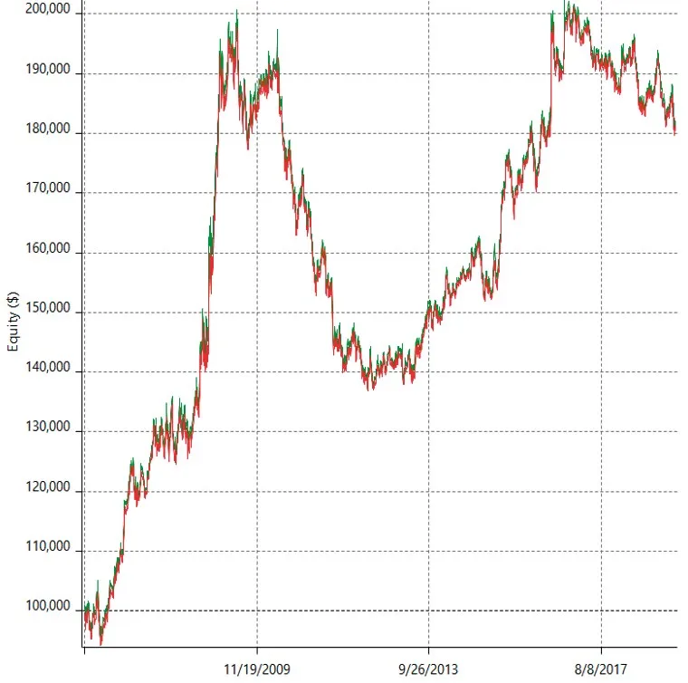You can see an equity curve that’s moving higher. This tells you GBP/USD is a trending market because it makes money when you use a trend-following approach to trade it.
AUD/CAD: Equity curve showing new lows when a trend-following approach is traded on it.
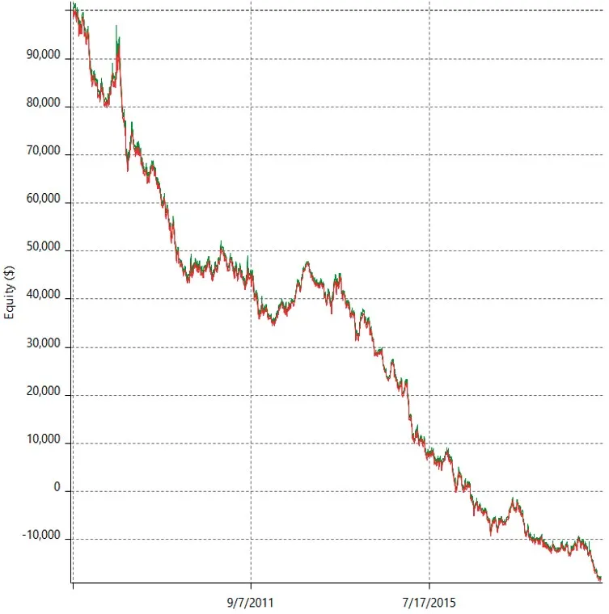Now you can see an equity curve that’s heading lower. Clearly, AUD/CAD is a mean-reverting market because it loses money when a trend-following approach is traded on it.
You can do this test on your own to find out which markets have trending or mean-reverting behavior (this concept can also be applied to the weekly time frame). So what can you do with this insight? One way is to use different trade management for different market behavior.
For example, if you know GBP/USD has shown trending behavior in the daily time frame, then you’ll want to consider trailing your stop loss for this market since you have a better chance of riding a trend. And for AUD/CAD, you can have a fixed target profit at the previous day’s high/low since it tends to reverse around that level. Make sense?
As you grow as a trader, you’ll realize different trade management techniques are better suited for different market conditions. For example, let’s say you used the MAEE formula and entered a long trade at support (on the daily time frame). How do you know whether to capture a swing, ride a trend, or adopt a hybrid approach?
This is where you can look at the higher time frame for guidance. Imagine the higher time frame is in a strong uptrend. What would you do? Well, you can consider holding the trade longer since the uptrend is strong with shallow pullbacks, which makes it easy to ride the trend.
But what if the higher time frame is in a potential distribution stage? Then you’ll want to consider exiting your position at the nearest swing high before the market reverses lower. Or what if the market is in a potential accumulation stage? Well, you can sell half of your position at resistance and hold the remaining to see if the price can break out of resistance. If it does, great! You’ve still got half your position to ride the new uptrend. But if it doesn’t, your losses are minimized because you’ve exited half your position at a profit.
Now, this can get complex and messy if you don’t know what you’re doing. So my suggestion is to keep things simple at the start. When you level up as a trader, you can consider more advanced trade management techniques like this one.
If you look at most charts, you’ll realize the volatility of the market is always changing. It can move from a period of low volatility to a period of high volatility and vice versa. This means when the market is quiet, you should expect something big to happen soon. And if the market is moving crazily, expect it to get quiet soon.
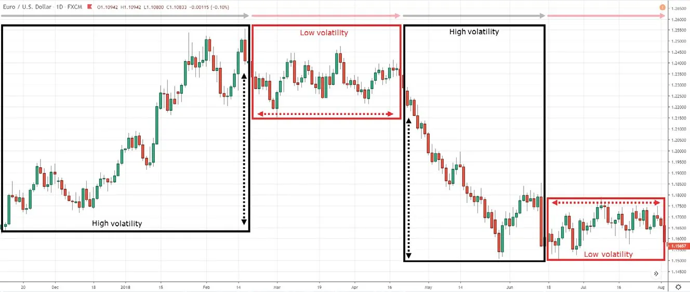Newbie price action traders love to trade high-volatility markets because that’s where the excitement is. But the problem with a high volatility environment is that your stop loss needs to be wider to take into account the “noise” in the market—and this offers a poor risk-to-reward ratio. Also, high volatility occurs when the market is about to enter a low volatility environment, so this is where they’ll get “stuck” in their trades.
In contrast, professional price action traders love entering low-volatility environments. Your stop loss is tighter, thus allowing you to put on a larger position size (while risking the same amount). And if volatility expands in your favor, it offers a favorable risk-to-reward ratio (possibly 1:5 or more).
You’re probably wondering, “How do I find trades in a low volatility market environment?” Well, you can apply the MBEE formula or the pre-breakout technique that you learned earlier. As you can see, a lot of the stuff you’re learning here builds on the concepts you learned earlier. So if you’re unsure, spend some time revisiting the earlier chapters. Don’t rush into things because trading is a marathon, not a sprint.
You’ve learned nine advanced price action trading techniques that will help you better time your entries and exits. In the next section, I want to share a few trading examples based on the concepts you’ve learned. This will give you better insights into my thought processes, including what I look for in a trade and why I choose to avoid certain setups.